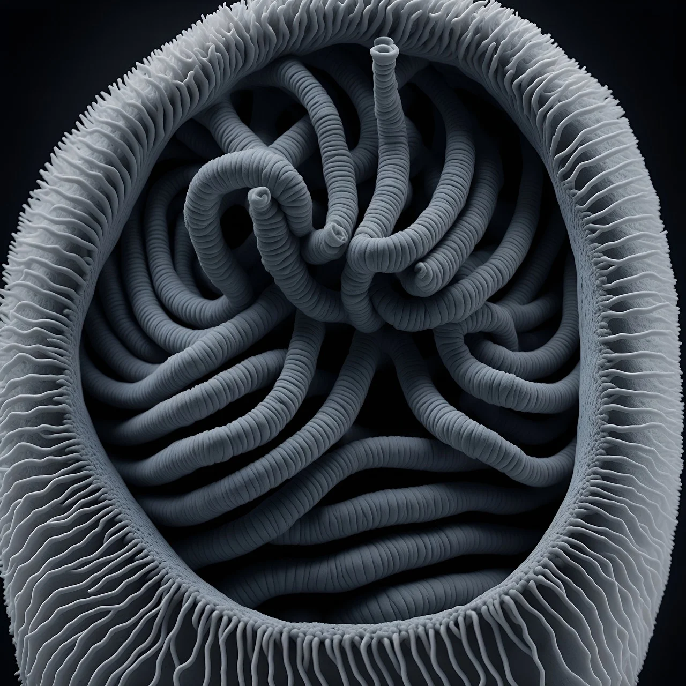

After the cataclysmic event known as the Big Bang, approximately 5,000 years ago, an unusual type of parasitism emerged in the primordial universe. This entity, known as the Parasitism Parasite, differed from the conventional parasites that simply fed on their hosts. Instead, it evolved with a singular purpose: to hunt other parasites. In the chaotic aftermath of creation, where life in its most basic form began to emerge, competition for resources was fierce. This unique parasite developed the ability to detect, latch onto, and feed on other parasitic organisms, turning the tables on the traditional predator-prey relationship.
The Parasitism Parasite thrived by evolving specialized mechanisms to track down its prey. It could sense parasitic organisms that had already infested a host, using its predatory instincts to locate and infiltrate these creatures. Once it found a suitable victim, it would invade the parasite’s body, draining it of its energy and nutrients to fuel its own growth. This process would eventually destroy the host parasite, leaving the original host of the prey unharmed—albeit weakened. Over time, this predator of parasites carved out its ecological niche, ensuring its survival in a universe where only the most adaptable could thrive.
As the universe expanded and new ecosystems formed, the Parasitism Parasite continued to evolve. It became increasingly adept at identifying a wide variety of parasitic life forms, from microscopic organisms that fed on bacteria to more complex parasites that attacked higher life forms. Its ability to adapt to the biology of different hosts made it a versatile predator. Over the millennia, this parasite hunter became an apex entity in the parasitic food chain, constantly hunting, evolving, and refining its methods. Each parasitic organism it consumed allowed it to further specialize in hunting its own kind, solidifying its role as the ultimate parasite hunter.
Even today, the Parasitism Parasite persists, continuing its age-old cycle of hunting and consuming other parasitic life forms. While its presence is mostly undetected by advanced organisms, it plays a crucial role in maintaining balance in the ecosystems it inhabits. By targeting and eliminating parasitic threats, it indirectly helps sustain the health and survival of many host species. Though it remains a predator, driven by its primal need to nourish itself through the parasitic organisms it hunts, the Parasitism Parasite has become a hidden force that ensures the equilibrium between life forms in a universe still shaped by the violent birth of existence.
